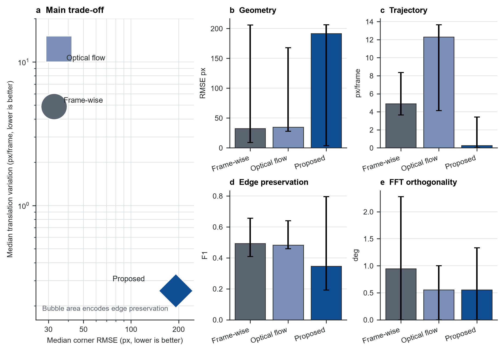
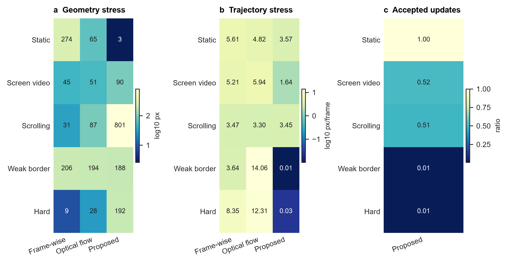
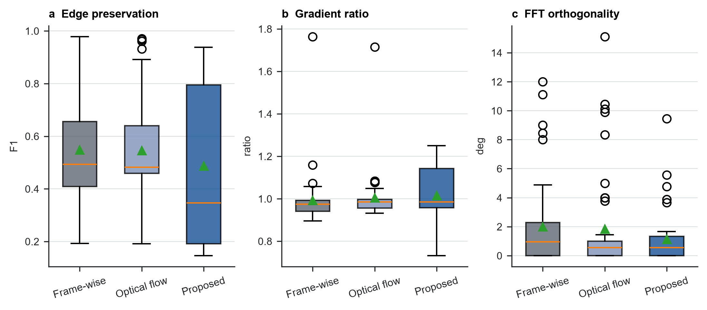
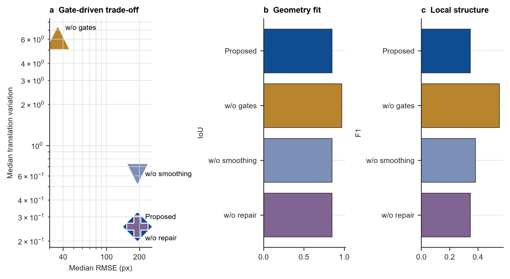
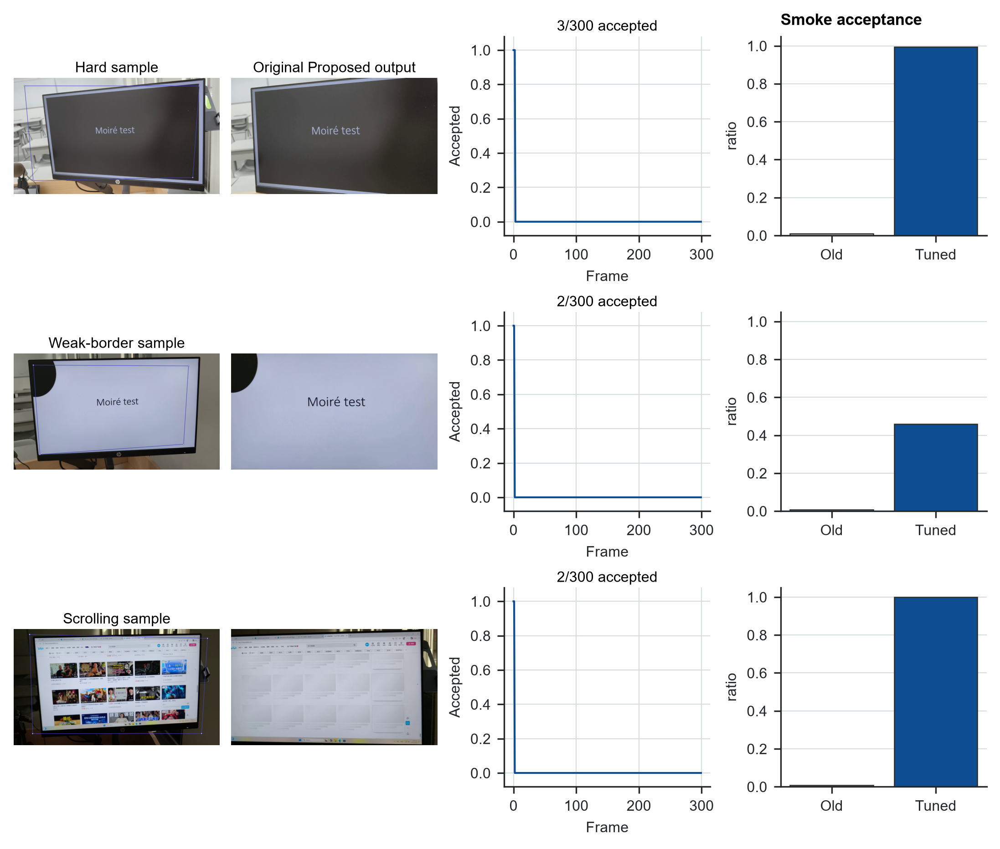

Handheld videos of computer displays provide a practical substitute for direct screen recording, but they mix projective distortion, camera shake, background clutter, weak display borders, and screen content that can move independently of the physical monitor. We implement an auditable screen-plane normalization pipeline for this setting. The system initializes a screen quadrilateral, tracks a fixed reference screen plane with pyramidal Lucas-Kanade features and a RANSAC homography, rejects unreliable updates through explicit gates, repairs and smooths the corner trajectory, and renders a frontal screen-coordinate video. A first-pass benchmark on 50 real captured-screen videos and 14985 frames shows a clear stability-accuracy trade-off. The proposed reference-anchored pipeline reduced median trajectory-derived translation variation to 0.254 px/frame, compared with 4.886 for frame-wise detection and 12.311 for adjacent-frame optical flow. However, it did not improve overall annotated geometry: median corner RMSE was 191.83 px for the proposed method, versus 32.56 px and 34.88 px for the two baselines, and median edge preservation was also lower. Category and ablation analyses identify the main cause: conservative reliability gates suppress short-term jitter but can freeze stale or incorrect geometry when internal screen motion, weak borders, or difficult viewpoints dominate the evidence. A small post-run tuning smoke test reduced this over-freezing on hard and weak-border examples, but scrolling content still requires physical-border evidence. The contribution is therefore not a completed demoireing method or an overall winner, but a reproducible benchmarked front end that exposes the engineering boundary for captured-screen video normalization.
Keywords: screen rectification; video stabilization; homography; optical flow; captured-screen video; projective geometry
Captured-screen video normalization is a geometric prerequisite for restoring content recorded from a physical display. When direct screen capture is unavailable, a handheld camera can preserve a presentation, software workflow, or device output, but the resulting video is not a clean screen recording. It contains the surrounding scene, perspective distortion, lens sampling artifacts, hand motion, glare, exposure changes, and partial occlusion. A useful front end for later OCR, restoration, or demoireing must first recover the screen plane and express the content in a stable frontal coordinate system.
The central difficulty is that the screen content and the physical screen do not obey the same motion model. Textures inside the display may scroll, animate, or play video, while the physical monitor moves only through camera motion. A frame-to-frame tracker can therefore follow internal content rather than the screen boundary. A detector applied independently to every frame avoids some drift, but detector noise becomes output jitter after perspective warping. This paper studies that trade-off directly instead of hiding it behind a single visual-quality score.
We implement a classical reference-anchored screen-plane normalization pipeline and evaluate it as an engineering benchmark. The proposed method tracks a fixed reference plane, estimates a robust homography, accepts only reliable updates, repairs missing trajectory segments, smooths the corner path, and renders a frontal video. The formal experiment compares this method with frame-wise detection and adjacent-frame optical flow on 50 real captured-screen videos across static, screen-video, scrolling, weak-border, and hard conditions.
The paper makes four bounded contributions. First, it provides a reproducible pipeline from full-scene videos and sparse four-corner annotations to rectified outputs, structured CSV/JSON metrics, and per-clip audit reports. Second, it implements a reference-anchored tracker with explicit update-acceptance diagnostics. Third, it reports a controlled first-pass comparison on 14985 frames and 179 non-initialization annotated frames. Fourth, it separates annotated geometry, trajectory-derived variation, local detail preservation, and FFT direction diagnostics so that smoothness is not confused with correctness.
The contribution boundary is important. This work performs geometric normalization and resampling only; it is not a learned demoireing system. The frequency measurements describe directional regularity after rectification, not moire suppression. The current implementation also falls short of the original proposal in one key respect: physical display-border evidence is not yet the dominant per-frame cue. The claims below are therefore limited to the code and experiments that were actually run.
Captured-screen restoration and video demoireing methods usually assume that the screen region is already well cropped or aligned. Dai et al. build spatially and temporally aligned captured/clean video pairs and learn relation-based temporal consistency [16]. Xu et al. combine direction-aware frequency processing, alignment, color correction, and detail refinement [17]. Yue et al. study raw-domain screen recapture and modulation-based restoration [18]. These works focus on content restoration. The present work addresses the preceding front end: producing a frontal screen-coordinate video from a full handheld scene.
Planar document and screen rectification rely on the same projective geometry: a planar surface observed by a perspective camera is mapped to a frontal coordinate system by a homography. Camera-based document analysis has used page borders, line evidence, layout cues, and vanishing points to recover frontal document images [1--4]. Screen-camera calibration also treats the display as a planar projective surface, although controlled projected patterns provide evidence unavailable in ordinary handheld recordings [4]. These methods support the geometric model used here, but single-image rectification applied frame by frame does not guarantee temporal continuity.
The tracker uses classic feature tracking and robust model fitting. Lucas-Kanade registration [7] and its pyramidal implementation [8] support local tracking under larger displacements, while Shi-Tomasi features [9] provide trackable corners. RANSAC and related robust estimators [10] estimate homographies when incorrect correspondences are present. Video-stabilization research further shows that path smoothing, geometric distortion, and crop cost should be evaluated separately [11--14]. Our target is narrower: only the physical screen plane is stabilized, and the output canvas is the screen rectangle itself. This removes the usual background crop trade-off but introduces ambiguity between camera motion and dynamic screen content.
The task is to estimate a four-corner screen quadrilateral for each video frame and warp the screen content to a fixed frontal canvas. Corners are ordered as top-left, top-right, bottom-right, and bottom-left. The system uses manual frame-0 corners when available, otherwise it falls back to an automatic contour detector. Frame 0 is then treated as initialization evidence and excluded from geometry scoring.
The proposed pipeline is reference anchored (Figure 1). It selects Shi-Tomasi features inside the reference screen region, tracks those features into each new frame with pyramidal Lucas-Kanade optical flow, removes inconsistent tracks with a forward-backward check, and estimates a RANSAC homography from the remaining correspondences. The estimated homography projects the reference quadrilateral into the current frame.
Reliability gates decide whether a candidate quadrilateral is accepted. The gates check match count, RANSAC inlier count and ratio, median reprojection error, spatial coverage on the screen plane, area change, side-length ratios, and convexity. If a candidate fails, the online trajectory holds the last accepted quadrilateral. After the full clip is processed, the trajectory is repaired by interpolation, median filtering, and exponential smoothing. Each frame is then warped to the fixed screen canvas, with an optional small residual affine alignment after the main homography.
The experiment compares three methods under the same input videos, frame-0 initialization, output canvas, encoder, annotations, and metric code. Frame-wise estimates the screen quadrilateral independently in each frame and does not smooth the result. Optical flow propagates geometry from the previous frame to the current frame without fixed-reference anchoring. Proposed uses fixed-reference tracking, reliability gates, failure holding, offline interpolation, median filtering, exponential smoothing, and residual alignment.
The formal Proposed configuration is smooth=0.85, median_window=5, trajectory_window=9, interpolate=true, geometry_gate=true, reference_align=true, and reference_reliability_gates=true. This comparison isolates the trajectory-estimation and temporal-processing choices as much as possible, but it does not compare against learned restoration models because the implemented system does not perform content restoration.
The experiment uses 50 project-collected videos totaling 14985 frames. The five categories each contain ten clips: hard for difficult viewpoints or backgrounds, screen_video for videos playing inside the display, scrolling for scrolling content, static for mostly static content, and weak_border for weak or low-contrast screen boundaries. Category and clip identifiers were assigned before metric aggregation.

Frame 0 is used for initialization and is excluded from geometry scoring. Human annotations provide the visible screen corners in top-left, top-right, bottom-right, bottom-left order. The 50 clips contain 228 annotated frames. After excluding initialization frames, 45 clips retain 179 matched annotated frames. Five scrolling clips have only frame-0 annotations, so their geometry metrics are skipped while they remain in temporal, detail, and frequency evaluations.
| Category | Clips | Frames |
|---|---|---|
| hard | 10 | 3000 |
| screen_video | 10 | 2996 |
| scrolling | 10 | 2995 |
| static | 10 | 2994 |
| weak_border | 10 | 3000 |
| Total | 50 | 14985 |
Geometry is evaluated on non-initialization annotated frames using corner RMSE, quadrilateral IoU, and relative aspect-ratio error. Temporal stability is measured from the frame-to-frame projective change of each method's estimated screen quadrilateral and is decomposed into translation, rotation, and scale variation. This metric is a trajectory-derived diagnostic, not an independent proof of physical stabilization, because it shares information with the estimator being evaluated.
Detail preservation is measured on sampled frames using gradient-magnitude ratio and an edge-preservation index. Frequency diagnostics analyze FFT direction and orthogonality on fixed sampled frames. These frequency values describe directional regularity after geometric normalization; they do not measure demoireing quality. Results are aggregated per clip and reported as medians with interquartile ranges, with per-clip CSV and JSON files retained for audit.
The run environment was Windows 11, Python 3.12.13, OpenCV 5.0.0, NumPy 2.5.1, and FFmpeg 8.1. Runtime includes algorithm execution and metric generation but excludes manual annotation.
The formal first-pass experiment completed all 50 clips. The three methods produced 150 rectified videos, 600 metric JSON files, and 50 HTML audit reports. Total processing time was approximately 1111.2 s for Frame-wise, 1647.9 s for Optical flow, and 1800.3 s for Proposed. Median per-clip time was 22.3 s, 32.9 s, and 36.1 s, respectively. These numbers establish that the first-pass pipeline is runnable end to end, but they do not by themselves establish output correctness.
The overall metrics show a trade-off rather than a uniform win for the proposed method (Figure 3 and Table 2). Proposed has the lowest trajectory-derived translation variation, rotation variation, and scale variation, but it is worse than both baselines in median annotated geometry and edge preservation. The median translation variation is 0.254 px/frame for Proposed, compared with 4.886 for Frame-wise and 12.311 for Optical flow. In contrast, median corner RMSE is 191.83 px for Proposed, compared with 32.56 px and 34.88 px for the baselines.

Lower geometry, temporal, and frequency errors are better, while higher edge preservation is better. The table therefore supports a narrow claim: reference anchoring and gates make the estimated trajectory smoother, but the formal run does not support overall geometric superiority.
| Metric | Frame-wise | Optical flow | Proposed |
|---|---|---|---|
| Corner RMSE, px ↓ | 32.56 [8.98, 205.83] | 34.88 [27.79, 167.78] | 191.83 [3.56, 206.27] |
| Quadrilateral IoU ↑ | 0.979 [0.855, 0.991] | 0.973 [0.892, 0.978] | 0.849 [0.810, 0.996] |
| Relative aspect error ↓ | 2.0% [0.3%, 6.2%] | 2.1% [0.8%, 5.6%] | 0.8% [0.1%, 3.2%] |
| Translation variation, px/frame ↓ | 4.886 [3.641, 8.354] | 12.311 [4.136, 13.648] | 0.254 [0.026, 3.411] |
| Rotation variation, deg/frame ↓ | 0.037 | 0.048 | 0.0005 |
| Scale variation, relative/frame ↓ | 0.0028 | 0.0048 | 0.0001 |
| Gradient-magnitude ratio | 0.974 | 0.984 | 0.985 |
| Edge-preservation index ↑ | 0.494 [0.409, 0.656] | 0.482 [0.459, 0.640] | 0.347 [0.192, 0.795] |
| FFT orthogonality error, deg ↓ | 0.944 [0.000, 2.278] | 0.556 [0.000, 1.000] | 0.556 [0.000, 1.333] |
Category-level analysis shows why the aggregate result is mixed (Figure 4). Proposed works best in static, where it reaches a median corner RMSE of 2.63 px, much lower than 274.43 px for Frame-wise and 65.41 px for Optical flow. In this setting, reference anchoring suppresses detector jitter without being distracted by strong internal content motion.
The same mechanism fails in several stress categories. In scrolling, Proposed reaches 801.48 px median RMSE, while Frame-wise and Optical flow are 31.36 px and 86.92 px. In hard and weak_border, Proposed is very smooth but accepts very few updates: the median accepted-update ratio is about 0.01 in both categories. These values show that the low temporal variation in those categories can be produced by long trajectory holds, not necessarily by correct tracking of the physical screen.

The qualitative outputs match the metric trade-off (Figure 5). In static or clearly bounded examples, Proposed often yields a stable frontal view. In scrolling, weak-border, and hard examples, it can crop the display, shift the canvas, or hold an early geometry estimate for too long. These failures are visible even when the trajectory-derived variation is low.

Detail metrics provide an independent check on this interpretation (Figure 6). The median gradient-magnitude ratio for Proposed is 0.985, close to the baselines, but its median edge-preservation index is 0.347, below 0.494 for Frame-wise and 0.482 for Optical flow. This means that a smoother estimated trajectory does not automatically preserve local edge alignment. The loss may come from geometry error, stale holds, extra resampling, or residual alignment. In the frequency diagnostics, Proposed and Optical flow both have a median FFT orthogonality error of 0.556 deg, lower than 0.944 deg for Frame-wise; this indicates more regular dominant directions after rectification, not moire removal.

The full ablation experiment repeated all 50 clips. Removing reliability gates reduces median geometry RMSE from 191.83 px to 35.63 px and raises IoU from 0.849 to 0.968, but increases trajectory translation variation from 0.254 px/frame to 6.165 px/frame. Edge preservation also rises from 0.347 to 0.552. This shows that the present gates are too conservative: they strongly reduce trajectory variation but sacrifice much of the geometric fit and edge consistency. Removing trajectory smoothing leaves geometry almost unchanged and increases translation variation to 0.617 px/frame, showing that smoothing mainly affects temporal diagnostics. Removing offline repair is nearly identical to the full Proposed method on the primary metrics, suggesting that this module was not strongly triggered in the first-pass experiment.

Manual audit identified three representative failure modes (Figure 8). First, difficult viewpoints or occlusion can propagate early geometry errors; hard_01 accepts only 3 of 300 frames in the formal run. Second, weak borders or low texture leave too little reliable coverage; weak_border_10 accepts only 2 of 300 frames. Third, scrolling content creates reference features unrelated to the physical screen; scrolling_10 also accepts only 2 of 300 frames and lacks non-initialization geometry annotations.
A small post-run tuning smoke test softened the dynamic reference gates and reran 1-2 examples per category. The smoke test is not included in the formal aggregate metrics, but it is useful as an engineering diagnostic. On hard_01, acceptance increased from 3/300 to 298/300 and RMSE improved from 191.83 px to 41.56 px. On weak_border_10, acceptance increased from 2/300 to 138/300 and RMSE improved from 188.20 px to 104.78 px. However, scrolling remained unresolved: scrolling_05 accepted more updates but worsened from 873.67 px to 1027.15 px. This indicates that softer gates reduce over-freezing, but dynamic content still needs a physical-border evidence module rather than more smoothing alone.

The first-pass study supports a failure-aware interpretation of the proposed method. Reference anchoring, reliability gates, and trajectory smoothing reduce short-term variation in the estimated quadrilateral, which is useful when the screen plane is already correct. The same design can also produce misleading stability when the tracker holds stale geometry. This is why the paper treats trajectory-derived variation, annotated geometry, edge preservation, and qualitative audit evidence as separate measurements rather than collapsing them into one score.
The ablation and tuning smoke test point to the same improvement direction. Disabling gates almost recovers baseline-level geometry but loses temporal stability, while the tuned gates reduce over-freezing on hard and weak-border examples without solving scrolling content. The next method change should therefore improve the evidence used to accept updates. The most direct path is to complete the physical-border tracker proposed at project start: detect screen-border line segments, estimate their intersections, and use interior features as consistency checks rather than allowing moving screen content to dominate the homography.
The evaluation remains limited. The dataset is small and self-collected by the project team, so it cannot establish generalization across devices, display technologies, capture distances, or lighting conditions. Geometry annotations are sparse, and several scrolling clips have only initialization-frame annotations. The temporal metric is derived from the estimated trajectory itself and is not independent physical stabilization evidence. Detail and frequency metrics are diagnostics without paired clean screen recordings, so they do not evaluate demoireing quality. Finally, every perspective warp resamples the image; frontal geometry and lower jitter can come at the cost of blur, ringing, or changed high-frequency structure.
This paper completes an end-to-end experimental pass for geometric normalization of real captured-screen videos. The pipeline processed 50 videos and produced rectified outputs, structured metrics, audit reports, manuscript figures, and reproducible documentation. The proposed reference-anchored method substantially reduces trajectory-derived variation, but the formal first-pass run does not improve overall annotated geometry or edge preservation. The main finding is the stability-accuracy trade-off created by conservative reliability gates. The system is therefore best treated as an auditable geometric preprocessing benchmark and a baseline for further improvement. Future work should add physical-border evidence and rerun the full benchmark before integrating the front end with demoireing or screen-content restoration models.
The reported values come from the formal first-pass experiment and the matched full ablation experiment. Aggregated metric tables, evidence notes, and figure source files are archived with the project submission. The raw videos are course-project data and require team review before any public release.
The code is provided with the project repository. Experiments are run with uv-managed Python scripts, and the submitted repository archive includes the manuscript source, exported paper files, aggregate metrics, and figure assets.
All three authors contributed to project framing, data collection, annotation, implementation, experiment execution, and manuscript preparation. The repository history records the concrete code, documentation, and experiment artifacts; individual contributions can be further itemized for the final course submission if required.